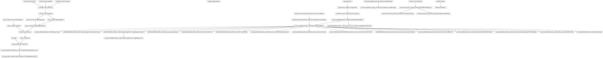
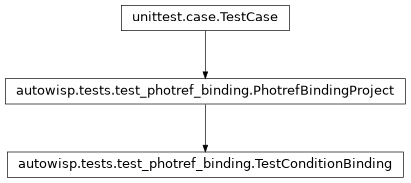
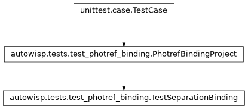

autowisp.tests.test_photref_binding module
Class Inheritance Diagram

Tests for binding images pending magnitude fitting to a photometric ref.
The engine records, in ImageMasterSelection, which single photometric
reference every image/channel fit_magnitudes sees is fit against. With a
finite max_photref_separation it picks the reference by separation; with an
unlimited one the condition expressions select it, as for any other master, and
that choice is recorded too. Either way the row must agree with the reference
magfit is actually given, since everything grouping images by reference reads
it rather than re-deciding.
These drive the manager the way _prepare_processing does – evaluating each
image’s expressions from its raw header, then binding – on a throwaway project
holding one two-channel camera and a single reference registered in channel
R only.
- class autowisp.tests.test_photref_binding.PhotrefBindingProject(methodName='runTest')[source]
Bases:
TestCaseA project with one registered single photref, holding no tests itself.
Each test gets a fresh manager, as
_evaluated_expressionscaches the master chosen for each image when it is first evaluated, and starts with no bindings.- static _add_diagnostics(db_session, image_id, channel, values)[source]
Record the given
{name: value}astrometry diagnostics.
- classmethod _add_photref(db_session, session_id)[source]
Register the single photref: a DR file of image
ref, in R.
- classmethod _add_raw_image(db_session, name, session_id, exposure)[source]
Write a raw frame, add its image to the database, return the id.
- classmethod _add_session(db_session)[source]
Add the equipment and the observing session, return its id.
- classmethod _config_overwrites()[source]
Return the configuration defaults the project is created with.
- classmethod _raw_fname(name)[source]
Return the raw frame filename of the image with the given name.
- bind_in_advance(name, channel)[source]
Bind the named image/channel to the reference before magfit.
- bindings(db_session)[source]
Return
{(image name, channel): MasterFile ID}of every binding.The reference’s own image is never pending, so is never bound.
- class autowisp.tests.test_photref_binding.TestConditionBinding(methodName='runTest')[source]
Bases:
PhotrefBindingProject
An unlimited
max_photref_separation: the conditions choose.- test_an_image_bound_in_advance_is_kept()[source]
A binding the conditions would not make stands, and is used.
- test_the_binding_is_what_magfit_is_given()[source]
Each row names the master its batch is configured with.
- test_the_selected_photref_is_recorded()[source]
Every image is handed on, those the conditions select are bound.
Distance no longer matters, so the far image is bound too. Channel
Gand the 60 s image have no photref, so are not bound, but are handed on all the same: dropping them is left to the batch configuration, as for any missing master.
- class autowisp.tests.test_photref_binding.TestSeparationBinding(methodName='runTest')[source]
Bases:
PhotrefBindingProject
A finite
max_photref_separation: bound by distance to the photref.